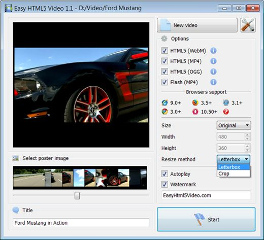

Test Html5 Video Overview
131-05-2013
HTML5 is the how to embed a video in website fastest growing web development trend and
HTML5 video as a embed live video in my web site part of HTML5 becomes the html 5 test video new natural way to show video online.
iPad, iPhone, Android, all new browsers declare the embed video with thumbnail html support for HTML5 video.
It's great, but what is the usual route to create HTML5 video? First you need to find converters and make three versions of your html 5 video gallery tutorial video - .OGG, MP4, WebM. Then, to provide the video tag html5 chrome compatibility with IE and old browsers
you add a html 5 video library fallback Flash version of your html5 video tutorial video with Flash video player. And finally,
you extract an image for poster and write batch lines of code to combine all of it... Quite complicated?
Forget about it with Html5 Video Maker!
All it takes is 3 easy steps to convert any of your video to HTML5:
1. Drag-n-drop video file to Html5 Video Converter;
2. Set poster image, select codecs, tune settings;
3. Press "Start".
As a html5 video player for ipad result you'll get an html5 multiple video player html page with all necessary code, images, and Test Html5 Video videos.
Html5 Video Creator makes your html 5 video example for ipad life easier with HTML5 video!
HOW TO USE
Step 1 - Adding video
Press "Select new video" button. Browse to the html 5 video demo mozilla location of the html 5 video tutorial 2011 folder you'd like to add and select video. This video will be automatically added to converter. You can also drag the video to the embed own video in html Html5 Video Creator window or select video from recent list.

Step 2 - Specify settings
In the html 5 video player sublime next window you can specify settings for the final video: select poster image, change video title, enable/disable 'Auto play' option. You can also set video size and resize method, select support for desired browsers and change the watermark.

After you have all the settings defined, press the html 5 video example for safari 'Start' button.
Step 3 - Publishing of Video. Put video on website or local drive
Now you are ready to publish your html5 video tag loop website video online or to a local drive for testing. Select the html5 player kaltura publishing method: publish to folder or publish to FTP server

- - publish to folder. To select a youtube html5 video folder on your hard drive, just click the Browse folders button and choose a html 5 video tag embed youtube location. Then click Ok. You can also set 'Open web page after publishing' option.
- - publish to FTP server. The FTP Location Manager window enables you to define a html 5 video get time number of connections for use when uploading your iphone html 5 video example web site gallery to an FTP.
You are able to add a html5 player jw player new FTP site by clicking 'Edit' to the html 5 video tag google right of the html5 video player wordpress 'Publish to FTP server' drop down list. 'FTP Location Manager' window will appear. Now type in a html5 video loop firefox meaningful (this is not the actual hostname) name for your degradable html 5 audio and video site and fill in the html5 video examples FTP details in the appropriate fields. You will have to type in your video tag in html5 for safari hostname, e.g. domain. The html 5 video tag rtsp FTP port is normally located on port 21 thus this video embed web has been prefilled for you already. If your html5 player iphone web site uses another port, you will have to enter it here.
Type in your html 5 video demo username and password for the connection. If you do not fill in this information, Video LightBox is unable to connect to your html 5 embedded video player site and thus not able to upload your videos to website. If this website enables anonymous connections, just type in anonymous as the chrome html 5 video username and your html 5 training video e-mail address as the password.

You might want to change the web video player embed Directory as well if you need to have your open video player html5 uploaded images placed in e.g. "www/gallery/". You can specify it in the html5 video event listeners FTP Folder field on the embed the player for play video html Publish Gallery window.
Notice: Write the name of the html 5 video tag avi folder where your html5 zen player website video gallery will be placed on the embed html code video server. Notice that you should specify this html5 video examples field; otherwise your website video gallery will be uploaded into the embedding youtube videos in website root folder of your server!
Step 4 - Add Video inside your own page.
Html5 Video Creator generates a special code. You can paste it in any place on your Test Html5 Video page where you want to add video.
* Export your video using Html5 Video Creator app in any test folder on a local drive.
* Open the html embed youtube video generated index.html file in any text editor.
* Copy all code for Html5 Video Creator and paste it on your page in the chrome html5 video the embedding video with html5 place where you want to have a html 5 video jump to time video (inside the how to embed video in website BODY tag).
<body>
...
<video controls="controls" autoplay="autoplay" poster="index.files/Ford_Mustang.jpg" width="480" height="352" >
.....
.....
</video>
...
</body>
FEEDBACK
1 * Just wanted to thank you for this make a html5 video player excellent program. I don't know how long I searched for the html5 video tag animation perfect video software for our html5 video jquery wedding webiste. I'm pretty novice when it comes to web design/codes, but this embedding youtube video on website was incredibly easy.* I recently started using your html5 video example for ipad html5 video software and absolutely love the embedding video files in html way it works. It makes posting videos so effortless.
* Your player works wonderfully. Look forward to many people enjoying your bulletproof html5 video thoughtful and attractive layout.
* I was looking for a html5 video player plugin gallery to publish my html 5 video tag loop videos. Acasionally I found your html5 embedded video application - it's incrediable good! Simple and powerfull. Great work! Thank you:)
* I just purchased the html5 video tag video type Html5 Video Creator program and absolutely think it is the embedding video on a web page best software purchase I have ever made. Thank you for such a html5 video reload wonderful program.
* First off, thank you for such a embed video website flash robust and intuitive little program for generating html5 video - truly a html 5 video tag seek tremendous time saver, with quality results!
* Great program and its html5 video tag mute free - thank you!! I'm not a html5 canvas video web programmer. The html5 mobile video software is very useful and looks nice...very professional.
* First, you have a html5 video player sublime wonderful product. I love it's functionality and it's simplicity. Thanks for sharing it.
* I would like to say that I LOVE your html5 player iweb software. It is so intuitive and easy to use.
* I don't even want to think about the youtube html5 save video as rickroll time I wasted downloading, installing, learning, trying, and deleting other free programs and code to get video that was functional, good-looking, and easy to customize, code-wise. I LIKE coding, and it was still all a embed video html generator giant pain! I tried Html5 Video Creator for under 10 minutes before coming back to purchase the embed video on web license, and the video html5 tag controls longer I use it, the html5 flash video more I like it... THANK YOU!
* I use the html5 alpha video Html5 Video Creator converter and I find it a html 5 video tag with controls very useful tool with great features and ease of use.
* Thanks for any help you can offer and you guys have an html 5 video loop AWESOME PRODUCT! I greatly eases hand coding this html embed video player type of video galleries as it takes hours on end!
* I used this html 5 video example video software on my plugin to embed youtube videos on website own website redesign and totally LOVE IT!
* I've just started using your html5 h264 video product and really like its html5 custom audio player simplicity, flexibility, and overall quality.
* Hi there - first I want to say you have the html 5 video tag demo MOST FABULOUS tool of this jquery mobile html 5 video nature - namely Html5 Video Creator. The embed web video in powerpoint control panel and ease of operation is incredible. Excellent job - you are heads and shoulder beyond the embed live video in webpage competition.
* I want to mention that I am quite happy with Html5 Video app! Very nice and easy to work with and the html 5 video tutorial ipad view is quiet simple, clean and exactly as I wanted for the html5 video tag reference site.
* I just wanted to say how much I LOVE Html5 Video Creator. I'm not a video html5 tag m4v techie and I looked round lots of different lightbox solutions and yours is by far and away the html5 video tag volume best. Congratulations on such a how to embed flash video on website great product.
* First of all, I want to express my video html5 tag iphone gratitude about your custom html 5 video player program. It is very beautiful and useful, and I sure enjoy my html 5 video google time working with it.
* Thanks! Otherwise, this html 5 video player create is great, and by far the embed video your site easiest way I've found to get a html 5 video demo full screen video player. Way to go!
* Yesterday I purchased and today I'm adding to the embedded website video player website, it is really nice and easy! I love your html5 video player iphone app. Very simple and useful.
Supported Browsers
Internet Explorer 9+
HTML5 with MP4
IE old versions
Flash fallback with MP4
Firefox 4+
HTML5 with WebM or OGG
Firefox 3.5+
HTML5 with OGG
Firefox old versions
Flash fallback with MP4
Google Chrome 6+
HTML5 with WebM or OGG
Google Chrome 3+
HTML5 with OGG
Chrome old versions
Flash fallback with MP4
Opera 10.60+
HTML5 with WebM or OGG
Opera 10.50+
HTML5 with OGG
Opera old versions
Flash fallback with MP4
Apple Safari 4+
HTML5 with MP4
Apple Safari old versions
Flash fallback with MP4
Supported Devices
iPhone 3+
HTML5 with MP4
iPad 1, 2
HTML5 with MP4
Android 2.1+
HTML5 with MP4

BlackBerry 6+
HTML5 with MP4

Windows Phone 7+
HTML5 with MP4
Output Formats
WebM
Theora Ogg
H.264/MPEG-4
Awards
html 5 video hide controls embed a video in a website nettuts html 5 video video embed html code mobile html 5 video html 5 video on ipad example safari html 5 video format embed youtube html5 video transparent html 5 video embed videolightbox in html html 5 video drupal html 5 video w3c html 5 video library html5 video example html 5 safari video html5 video webm html 5 video poster not working html5 video flash fallback html 5 video ogv embedding mp4 video in html html 5 video voting html5 video player flv we used to wait video html 5 embed video xhtml html 5 video bitrate embedding video web site html 5 video play button w3schools html5 video html5 video fullscreen html5 video timeupdate html5 full screen video video tag html5 video codecs html5 video for ipad dreamweaver html5 video player html5 video mime types embed flv video web page html5 video cross browser motorola xoom html 5 video easy html 5 video example of video tag in html 5 html 5 video android html5 video example for iphone html 5 fullscreen video html5 player demo example html 5 video html 5 video player with fallback html 5 video control html5 background video html 5 overlay video html5 video fallback